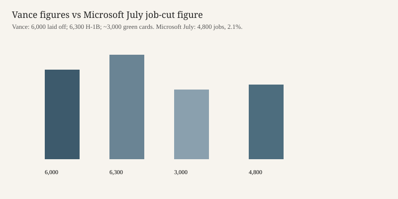

Washington · labor · 9 October 2026
Labor said it will halt PERM filings by Microsoft, Adobe, and six IT firms while probes of nine universities open

What is agreed across desks
On Thursday 8 October 2026 Vice President JD Vance said the administration was suspending Microsoft from a program used to seek permanent residence for workers admitted on H-1B visas. Reuters reported that the suspension also covers Adobe and six information-technology contractors named by Labor Secretary Keith Sonderling: Cognizant, Infosys, Tata Consultancy Services, Wipro, HCL Technologies, and Capgemini. The Labor Department will halt new and pending applications involving those companies. Reuters described the affected track as PERM, the permanent labor certification that is a step toward an employment-based green card. Fox Business and the New York Times reported the same Microsoft suspension and the same fraud allegation from Vance.
Reuters added two program facts that are not the accusation: a $100,000 fee already applies to fresh H-1B petitions under a White House proclamation, and a Labor effort called Project Firewall has opened about 200 cases and levied millions of dollars in penalties. The Thursday action is a suspension of filings by named employers, not a cancellation of every existing visa.
What is only a quote
Vance said there has been “no company in the United States, unfortunately, that has abused the system more than Microsoft.” He said the company laid off 6,000 American workers last year while receiving 6,300 H-1B visas and nearly 3,000 green cards, and that each laid-off worker was replaced by one and a half “foreign indentured servants.” Those ratios are his arithmetic. Reuters noted that Microsoft said in July it would cut 4,800 jobs, about 2.1 percent of its global workforce. The 6,000 and 4,800 figures are not the same number and were not reconciled in the stories used here. A global cut is also not a count of U.S. layoffs only.
The word fraud appears in headlines because officials used it. A suspension pending investigation is an administrative step. It is not a criminal conviction, a published audit, or a finding by a judge. None of the three stories quoted a Microsoft filing that admitted the ratio Vance stated. The New York Times reported that Vance told the company it had to hire American workers. That is a demand. It is not evidence that every H-1B role had a qualified U.S. applicant who was rejected.
University probes were announced alongside the company list. Reuters said nine universities were under scrutiny over international students and exchange programs. Names and charging documents were not in the summary used here. A probe is not a finding.
Mechanism a reader needs
The H-1B is a temporary status for a specialty occupation. It is not a green card. PERM is the Labor Department process in which an employer attests that it tried to hire a U.S. worker and that the foreign worker will be paid the prevailing wage. Only after a labor certification can the employer typically file an immigrant petition with Citizenship and Immigration Services, and only after that does the worker, if a visa number is available, seek permanent residence. Halting PERM applications stops new certifications and, as Reuters described it, pending ones at Labor. It does not, on the facts in these stories, revoke visas already issued or empty an office on Friday morning.
Outsourcing firms and a product company are different users of the same statute. Infosys, TCS, Wipro, HCL, Cognizant, and Capgemini place workers at client sites. Microsoft and Adobe hire into their own payrolls. The Labor Department put them on one suspension list. The legal theory that justifies treating them alike was not spelled out beyond the fraud allegation. Readers can hold the list and the allegation separate.
What this story is not
It is not a finding that Microsoft committed fraud. It is not a finding that the 6,000 and 6,300 figures are wrong. It is not an account of every H-1B reform since the $100,000 fee. The photograph is a campus exterior of the type used for the company, not the press conference and not a portrait of Vance. The chart places his three figures next to the July job-cut figure Microsoft disclosed, without treating either as proved against the other.

Source articles and scores
| Outlet | Headline | T | N | C |
|---|---|---|---|---|
| Reuters | Trump administration freezes green cards for Microsoft, IT firms, probes universities | 94 | 0 | 84 |
| New York Times | Trump Administration Suspends Microsoft From Green Card Program | 90 | -6 | 80 |
| Fox Business | Vance suspends Microsoft, others from foreign workers applying for green cards, alleges visa abuse | 84 | +28 | 58 |